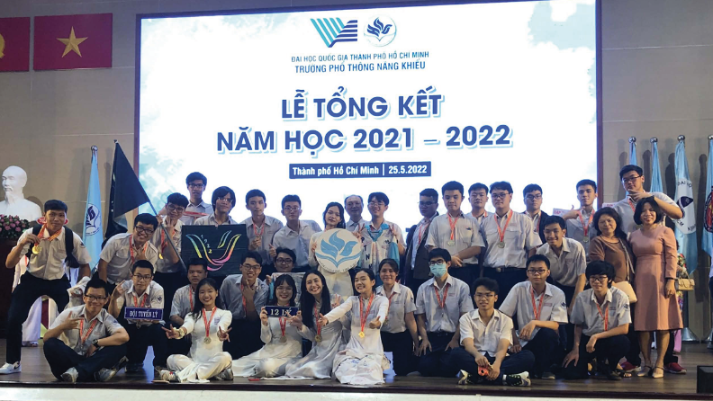

9622 là tuyển tập những cuộc trò chuyện với các thầy cô và anh chị cựu học sinh khối Lý trường Phổ thông Năng Khiếu, xoay quanh những nét riêng biệt và kỷ niệm khó quên từ những ngày đầu thành lập trường.
Năm 2021 đánh dấu cột mốc 25 năm thành lập trường. Nhân dịp này, lớp Lý 1922 lên ý tưởng cho L9622, với mong muốn lưu giữ và kết nối những câu chuyện của khối Lý qua các thế hệ. Dự án được hoàn thành vào năm 2026, sau nhiều nỗ lực của tập thể L1922 cùng sự hỗ trợ từ các thầy cô và anh chị đi trước. Dù không thể đại diện trọn vẹn cho toàn thể học sinh khối Lý, chúng em tin rằng những mảnh ghép nhỏ này vẫn góp phần phác họa nên một bức tranh chung, tuy chưa đầy đủ, nhưng chân thực và đầy tình cảm.
L1922 đã có ba năm học đầy cảm xúc tại Năng Khiếu, với rất nhiều trải nghiệm và ký ức đẹp từ thầy cô, từ ngôi trường thân thuộc, từ các anh chị khóa trên và cả các em khóa dưới. Vì vậy, L9622 xin gửi đến tất cả những ai đã, đang và sẽ là một phần của Năng Khiếu nói chung và khối Lý nói riêng.
L1922 là bla bla tuyển tập những cuộc trò chuyện với các thầy cô và anh chị cựu học sinh khối Lý trường Phổ thông Năng
